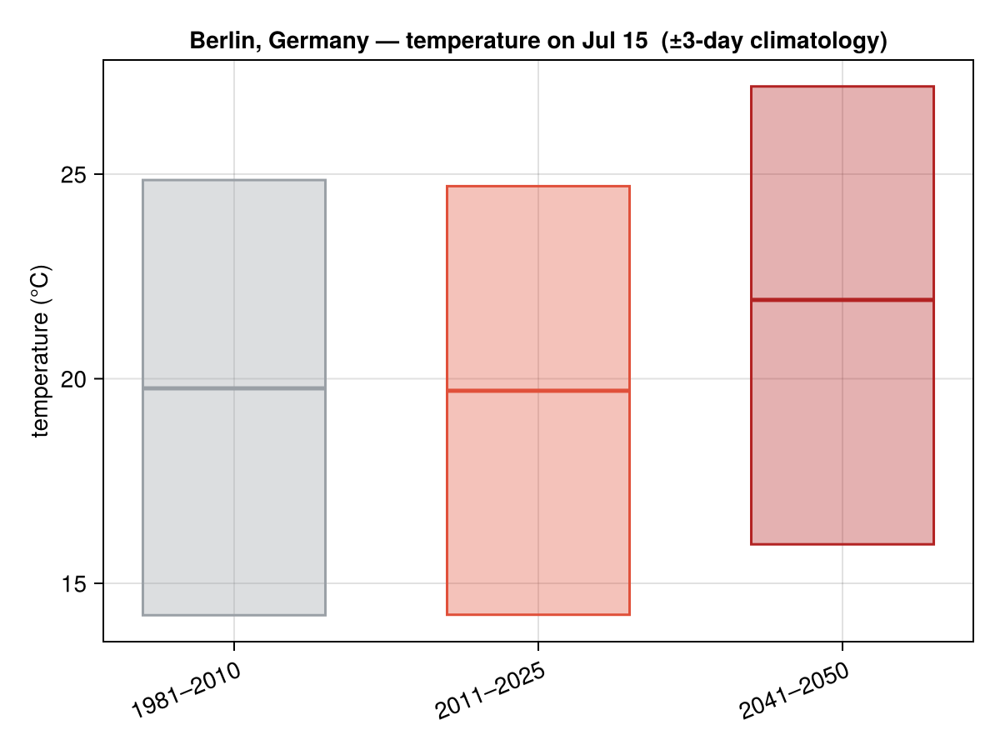
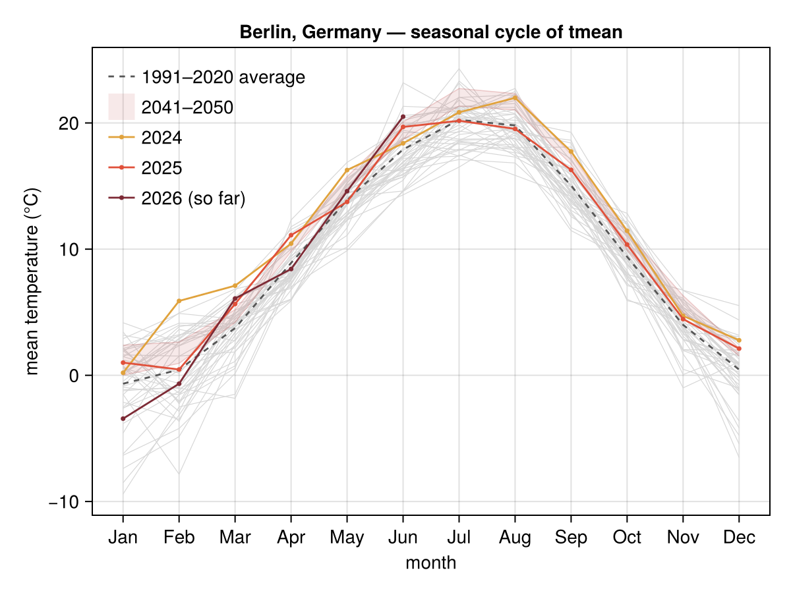
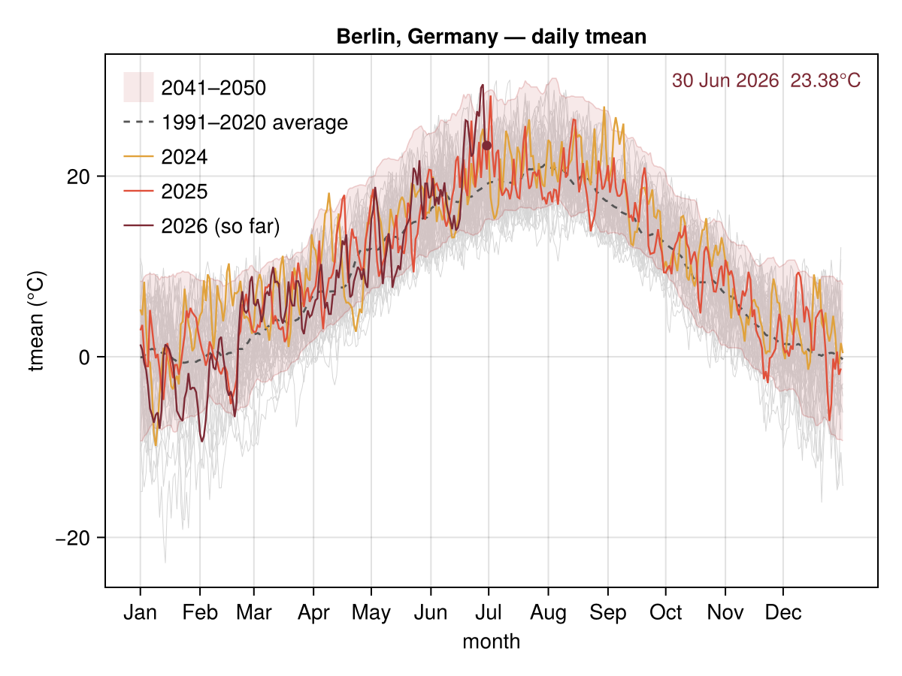

Temperature climatology
How warm is it for the time of year, and how is that shifting? ClimStats reduces the daily record to climatological normals — averages over a reference period, per calendar day and per month — and compares the present (today's forecast, the current year) and the future (a bias-corrected CMIP6 ensemble) against them.
The reference period is 1981–2010 by default, with 2011–2025 as a recent comparison window and 2041–2050 drawn from the projection ensemble.
The figures
The general script examples/climatology.jl renders all three figures for any location passed as an argument (defaulting to Berlin). Run it from the package root with a Makie backend and internet access:
julia --project=docs examples/climatology.jl "Berlin, Germany"Today vs. the climatology
climate_day_comparison puts today's forecast next to the day-of-year normals: a black bar for today's forecast tmin–tmax, a grey bar for the 1981–2010 reference, then 2011–2025 observed and 2041–2050 from the bias-corrected CMIP6 ensemble. Each bar spans the climatological tmin–tmax (smoothed over a ±3-day window) with a tick at the mean.
using ClimStats, CairoMakie
fig = climate_day_comparison("Berlin, Germany")
Monthly seasonal cycle
climate_monthly draws every observed year as a faint grey line, highlights the most recent complete year and the current (partial) year, and shades the 2041–2050 ensemble band.
fig = climate_monthly("Berlin, Germany")
Daily seasonal cycle
climate_daily is the daily-resolution companion: a light band for the 1981–2010 central 95 % interval, a darker 2041–2050 ensemble band, the last and current year as darker lines, and (online) the live forecast. Pass spaghetti = true to overlay every year individually.
fig = climate_daily("Berlin, Germany"; spaghetti = true)
Offline rendering
Every figure can be drawn from cached data alone — no network, with the live forecast omitted — by passing offline = true or setting the CLIMSTATS_OFFLINE environment variable. A location must have been fetched online at least once so its data (and geocoding) are on disk. The four bundled example locations (Berlin, Madrid, Athens, Fort Collins) come with a committed fixture cache, so they render offline out of the box — no prior fetch needed.
fig = climate_daily("Berlin, Germany"; offline = true) # cached data onlyClimStats.set_offline!(true) # process-wide; returns the previous settingComputing normals directly
The figures are built on three tidy reducers; each returns a DataFrame.
data = era5_daily("Berlin, Germany"; start = Date(1981, 1, 1))
daily_climatology(data; var = :tmean, window = 3, period = (1981, 2010)) # per day-of-year
monthly_climatology(data; var = :tmean, period = (1981, 2010)) # per calendar month
monthly_means(data; var = :tmean) # per (year, month)API
ClimStats.daily_climatology — Function
daily_climatology(data; var = :tmean, window = 3, period = nothing) -> DataFrameClimatological average of var for each day of the year. For every day-of-year d (1…366) the mean is taken over every observation whose date falls within ±window days of d — wrapping across the year boundary — across all years in period, an inclusive (first_year, last_year) tuple (or nothing for the whole record). The window smooths the otherwise noisy single-day average. Columns: :doy, :mean, :n (observations contributing to that day).
daily_climatology(data; var = :tmax, period = (1981, 2010)) # 30-yr normalClimStats.monthly_climatology — Function
monthly_climatology(data; var = :tmean, period = nothing) -> DataFrameClimatological average of var for each calendar month (1…12), pooled over all days in all years of period (an inclusive (first_year, last_year) tuple, or nothing for the whole record). Columns: :month, :mean, :n.
ClimStats.monthly_means — Function
monthly_means(data; var = :tmean) -> DataFrameMean of var for every (year, month) in the record — the per-year monthly means that monthly_climatology averages over. Columns: :year, :month, :mean, :n_days. Useful for plotting each year's seasonal cycle on its own.
ClimStats.climate_day_comparison — Function
climate_day_comparison(place; date = today(), window = 3, ref, recent, future, ...) -> FigureCompare today's forecast against the day-of-year temperature climatology across several eras, as a column of vertical bars. Each bar spans the climatological tmin–tmax for date's day-of-year (smoothed over a ±window-day window), with a tick at the mean (tmean):
- black — today's forecast
tmin–tmax(fromforecast_daily), - grey — the
refreference period (default 1981–2010), recent— the recent observed period (default 2011–2025), from ERA5,future— one bar per future period (default 2041–2050), from a bias-corrected CMIP6 ensemble; silently omitted if no projection data is available.
Pass offline = true (or set the CLIMSTATS_OFFLINE environment variable) to plot only from cached data without any network access; the live forecast bar is omitted in that case.
fig = climate_day_comparison("Berlin, Germany")
save("berlin_today_vs_climate.png", fig)climate_day_comparison for an already-resolved Location (no geocoding).
ClimStats.climate_monthly — Function
climate_monthly(place; var = :tmean, hist_start, future, ...) -> FigureSeasonal cycle of monthly-mean var: every observed year drawn as a faint grey line, with the most recent complete year and the current (partial) year highlighted. When projection data is available, each future period is added as a shaded across-model band. Pass offline = true (or set CLIMSTATS_OFFLINE) to plot only from cached data without any network access.
fig = climate_monthly("Berlin, Germany")
save("berlin_monthly_climatology.png", fig)climate_monthly for an already-resolved Location (no geocoding).
ClimStats.climate_daily — Function
climate_daily(place; var = :tmean, window = 3, ref, future, spaghetti = false, ...) -> FigureDaily-resolution companion to climate_monthly: the seasonal cycle of daily var across the year (day-of-year axis), styled after the Copernicus Climate Pulse charts. Drawn back-to-front:
- with
spaghetti = true(the default), every available year as a faint light-grey line — the "spaghetti" backdrop, - a magenta band per
futureperiod from the bias-corrected CMIP6 ensemble (omitted if no projection data is available), - the
ref-period climatological mean as a dashed grey line (1991–2020 by default, smoothed over a±window-day window), - the
recent_yearsmost recent years as warm accent lines (gold → coral → burgundy, current year last), with a marker and label at the current year's latest value, - and, when
forecast = true, the live forecast mean line.
Pass offline = true (or set the CLIMSTATS_OFFLINE environment variable) to plot only from cached data without any network access; the live forecast is omitted in that case.
fig = climate_daily("Berlin, Germany"; spaghetti = true)
save("berlin_daily_climatology.png", fig)climate_daily for an already-resolved Location (no geocoding).
ClimStats.forecast_daily — Function
forecast_daily(place; days = 7, vars, timezone) -> ClimateData
forecast_daily(location::Location; days, vars, timezone) -> ClimateDataDaily weather forecast for a location from the Open-Meteo forecast API, today through days - 1 days ahead. Same column convention as era5_daily (:date plus the requested :tmax/:tmin/:tmean/:precip), so the index and plotting helpers apply unchanged. The source label is "forecast".
Unlike ERA5 and CMIP6 this is a small, fast-changing live request and is not cached on disk — each call fetches fresh, at the exact location (no grid snap).
fc = forecast_daily("Berlin, Germany"; days = 7)
fc.table[fc.table.date .== Dates.today(), :] # today's forecast rowClimStats.set_offline! — Function
set_offline!(b::Bool) -> BoolEnable or disable offline mode (no network access; cached data only) and return the previous setting. Offline mode can also be turned on at load time by setting the CLIMSTATS_OFFLINE environment variable to 1/true.
ClimStats.offline_mode — Function
Whether ClimStats is currently in offline mode (see set_offline!).